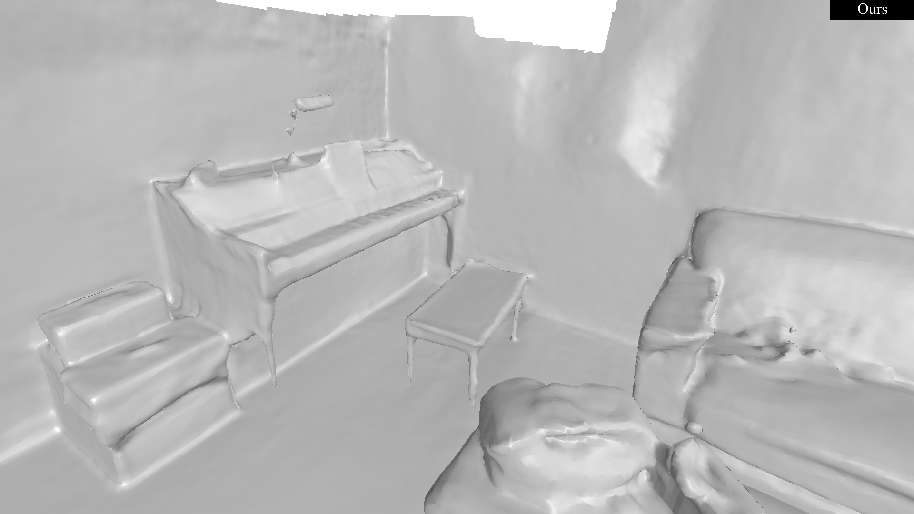
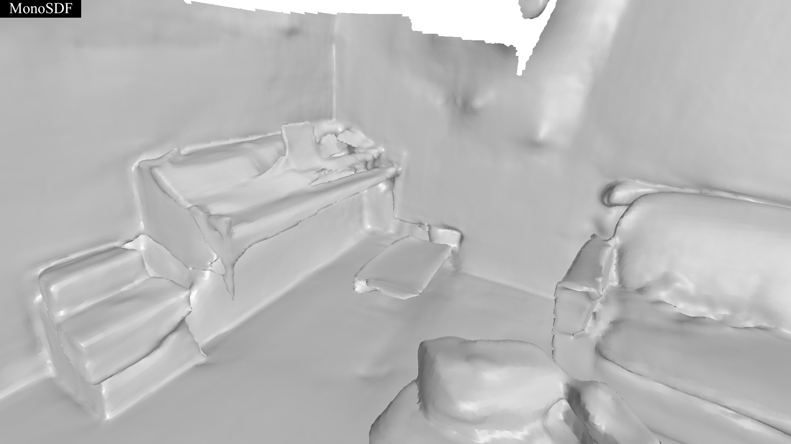

ScanNet


Neural implicit reconstruction via volume rendering has proven its effectiveness in recovering dense 3D surfaces. Nevertheless, it is nontrivial to simultaneously satisfy the need for detail and maintain smoothness across areas with differing characteristics. To address the aforementioned challenge, previous methods commonly employ geometric priors, which are often constrained by the performance of the prior models. In this paper, we propose ND-SDF, which learns a Normal Deflection field to represent the angle deviation between the scene normals and the prior normals. Previous methods typically apply geometric priors uniformly across all samples, which introduces significant biases in accuracy. In contrast, our proposed normal deflection field dynamically learns and adapts the utilization of samples based on their specific characteristics, thereby improving the precision and effectiveness of the model. In doing so, our method not only smooths areas like walls and floors but also preserves the geometric features of complex structures. In addition, we also introduce a novel ray sampling strategy based on the deflection angle. It facilitates the unbiased rendering process, thereby substantially enhancing the quality of detailed surfaces, with improved accuracy, particularly on thin structures. We conduct comprehensive experiments on various challenging datasets, the consistent improvement demonstrates the superiority of our proposed ND-SDF. All codes and models will be made public upon acceptance.
Overview of our method. We utilize multi-resolution hash grids γL as scene representation.
The core of ND-SDF is the normal deflection field. We represent deflection with quaternions,
which are predicted by the deflection network (denoted as fd).
We align the deflected normals with the prior normals to learn the deviation between the scene and the priors.
To distinctly supervise high and low-frequency areas, we employ an adaptive deflection angle prior loss, ensuring both smoothness and detail.
Furthermore, we utilize the deflection angle Δθ to distinguish complex structures,
enabling angle-guided sampling and color loss to facilitate intricate surface details. Lastly,
we combine the unbiased rendering method (TUVR) to promote the generation of extremely thin structures indoors.

The mesh extracted at 2048 resolution on T&T demonstrates that our method significantly enhances the generation of small and complex structures.
@article{tang2024ndsdf,
author = {Ziyu Tang and Weicai Ye and Yifan Wang and Di Huang and Hujun Bao and Tong He and Guofeng Zhang},
title = {ND-SDF: Learning Normal Deflection Fields for High-Fidelity Indoor Reconstruction},
journal = {arxiv preprint},
year = {2024},
}